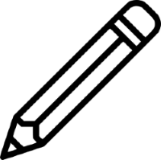

<!DOCTYPE html>
<html>
  <head>
    <title>My experiment</title>
    <script src="https://unpkg.com/jspsych@7.3.3"></script>
    <script src="https://unpkg.com/@jspsych/plugin-html-keyboard-response@1.1.2"></script>
    <script src="https://unpkg.com/@jspsych/plugin-image-keyboard-response@1.1.2"></script>
    <script src="https://unpkg.com/@jspsych/plugin-image-button-response@1.1.2"></script>
    <script src="https://unpkg.com/@jspsych/plugin-preload@1.1.2"></script>
    <script src="https://unpkg.com/@jspsych/plugin-html-button-response@1.1.2"></script>
    <link href="https://unpkg.com/jspsych@7.3.3/css/jspsych.css" rel="stylesheet" type="text/css" />
  </head>
  <body></body>

    <script>
        /* initialize jsPsych */
        var jsPsych = initJsPsych({
          on_finish: function() {
            jsPsych.data.displayData();
          }
        });

        /* create timeline */
        var timeline = [];

        /* preloading media (preload plugin) */
        var preload = {
          type: jsPsychPreload,
          images: ['img/paper.png', 'img/pencil.png']
        };
        timeline.push(preload);


        /* show instructions to partipant. */
        var instructions = {
            type: jsPsychHtmlButtonResponse,
            stimulus: `
            <p>In this experiment, a command will appear on the screen.</p>
            <p>For example: "Click on the <strong>paper</strong>, then on the 
            <strong>pencil</strong>, then <strong>Next</strong>."</p>
            <p>When you will be ready, you will click 'Next' and execute it in the following 
            screen by clicking on either a paper and/or a pencil icon.</p>
                
            <p>Press <strong>Next</strong> to read first instruction.</p>
            <div>
                <span></img></span>
                <span></img></span>
            </div>
            `,
            choices: ['Next'],
            button_html: '<button class="jspsych-btn" style="font-size: 25px;">%choice%</button>',
        };
        timeline.push(instructions);

        /* display images as buttons */
        var displayImages = {
            type: jsPsychHtmlButtonResponse,
            stimulus: "",
            choices: [`<div style='float: left;'></img></div>`,
            `Next`,
            `<div style='float: left;'></img></div>`],
            button_html: '<button class="jspsych-btn" style="font-size: 25px; vertical-align: bottom; display: table-cell; border: none;"><strong>%choice%</strong></button>',
            data: {
                task: 'response',
                correct_response: jsPsych.timelineVariable('correct_response')
            },
            on_finish: function(data){
                data.correct = data.response === data.correct_response[ind];
                // console.log(data.response);
                // console.log(data.correct_response);
                // console.log(data.correct = data.response === data.correct_response);
            }
        };

        /* display instructions for pencil-paper-next */
        var instruction = {
          type: jsPsychHtmlButtonResponse,
          stimulus: `
            <p>Click on the <strong>pencil</strong>, 
                then on the <strong>paper</strong>, 
                then <strong>Next</strong>.</p>`,
          choices: ['Ok'],
          button_html: '<button class="jspsych-btn" style="font-size: 25px; left: 50%;">%choice%</button>'
        };
        timeline.push(instruction);

        /* answers for this trial */
        var test_pencilPaper = [
          { correct_response: [0,2,1]}
        ];
        
        /* timeline to keep 'image screen' until 'Next' is clicked */
        var ind = 0;
        var loop_node = {
          timeline: [displayImages],
          timeline_variables: test_pencilPaper,
          loop_function: function(data){
            
            console.log('index is');
            console.log(ind);
            console.log('response is:');
            console.log(data.values()[0].response);
            console.log('correct response is:');
            console.log(data.values()[0].correct_response[ind]);
            if (data.values()[0].response === 1){
              console.log('in if');
              ind = 0;
              return false;
            } else {
              console.log('not in if');
              console.log(data.values()[0].response);
              console.log(data.values()[0].correct_response[ind]);
              console.log(data.values()[0].response === data.values()[0].correct_response[ind]);
              ind++;
              return true;
            }
          }
        }
        timeline.push(loop_node);

        /* display instructions for paper-pencil-next */
        var instruction2 = {
          type: jsPsychHtmlButtonResponse,
          stimulus: `
            <p>Click on the <strong>paper</strong>, 
                then on the <strong>pencil</strong>, 
                then <strong>Next</strong>.</p>`,
          choices: ['Ok'],
          button_html: '<button class="jspsych-btn" style="font-size: 25px; left: 50%;">%choice%</button>'
        };
        timeline.push(instruction2);

        /* answers for this trial */
        var test_paperPencil = [
          { correct_response: [2,0,1]}
        ];

        /* timeline to keep 'image screen' until 'Next' is clicked */
        var loop_node2 = {
          timeline: [displayImages],
          timeline_variables: test_paperPencil,
          loop_function: function(data){
            
            console.log('index is');
            console.log(ind);
            console.log('response is:');
            console.log(data.values()[0].response);
            console.log('correct response is:');
            console.log(data.values()[0].correct_response[ind]);
            if (data.values()[0].response === 1){
              console.log('in if');
              ind = 0;
              return false;
            } else {
              console.log('not in if');
              console.log(data.values()[0].response);
              console.log(data.values()[0].correct_response[ind]);
              console.log(data.values()[0].response === data.values()[0].correct_response[ind]);
              ind++;
              return true;
            }
          }
        }
        timeline.push(loop_node2);

        /* display instructions for paper-next */
        var instruction3 = {
          type: jsPsychHtmlButtonResponse,
          stimulus: `
            <p>Click on the <strong>paper</strong>,
                then <strong>Next</strong>.</p>`,
          choices: ['Ok'],
          button_html: '<button class="jspsych-btn" style="font-size: 25px; left: 50%;">%choice%</button>'
        };
        timeline.push(instruction3);

        /* answers for this trial */
        var test_paper = [
          { correct_response: [2,1]}
        ];
        
        /* timeline to keep 'image screen' until 'Next' is clicked */
        var loop_node3 = {
          timeline: [displayImages],
          timeline_variables: test_paper,
          loop_function: function(data){
            
            console.log('index is');
            console.log(ind);
            console.log('response is:');
            console.log(data.values()[0].response);
            console.log('correct response is:');
            console.log(data.values()[0].correct_response[ind]);
            if (data.values()[0].response === 1){
              console.log('in if');
              ind = 0;
              return false;
            } else {
              console.log('not in if');
              console.log(data.values()[0].response);
              console.log(data.values()[0].correct_response[ind]);
              console.log(data.values()[0].response === data.values()[0].correct_response[ind]);
              ind++;
              return true;
            }
          }
        }
        timeline.push(loop_node3);

        /* display instructions for pencil-next */
        var instruction4 = {
          type: jsPsychHtmlButtonResponse,
          stimulus: `
            <p>Click on the <strong>pencil</strong>,
                then <strong>Next</strong>.</p>`,
          choices: ['Ok'],
          button_html: '<button class="jspsych-btn" style="font-size: 25px; left: 50%;">%choice%</button>'
        };
        timeline.push(instruction4);

        /* answers for this trial */
        var test_pencil = [
          { correct_response: [0,1]}
        ];
        
        /* timeline to keep 'image screen' until 'Next' is clicked */
        var loop_node4 = {
          timeline: [displayImages],
          timeline_variables: test_pencil,
          loop_function: function(data){
            
            console.log('index is');
            console.log(ind);
            console.log('response is:');
            console.log(data.values()[0].response);
            console.log('correct response is:');
            console.log(data.values()[0].correct_response[ind]);
            if (data.values()[0].response === 1){
              console.log('in if');
              ind = 0;
              return false;
            } else {
              console.log('not in if');
              console.log(data.values()[0].response);
              console.log(data.values()[0].correct_response[ind]);
              console.log(data.values()[0].response === data.values()[0].correct_response[ind]);
              ind++;
              return true;
            }
          }
        }
        timeline.push(loop_node4);

        var debrief_block = {
          type: jsPsychHtmlKeyboardResponse,
          stimulus: function() {

            var trials = jsPsych.data.get().filter({task: 'response'});
            var correct_trials = trials.filter({correct: true});
            var accuracy = Math.round(correct_trials.count() / (trials.count()) * 100);
            var rt = Math.round(correct_trials.select('rt').mean());

            return `<p>You responded correctly on ${accuracy}% of the trials.</p>
              <p>Your average response time was ${rt}ms.</p>
              <p>Press any key to complete the experiment. Thank you!`;

          }
        };
        timeline.push(debrief_block);
                
        /* start the experiment */
        jsPsych.run(timeline);
        
    </script>
</html>